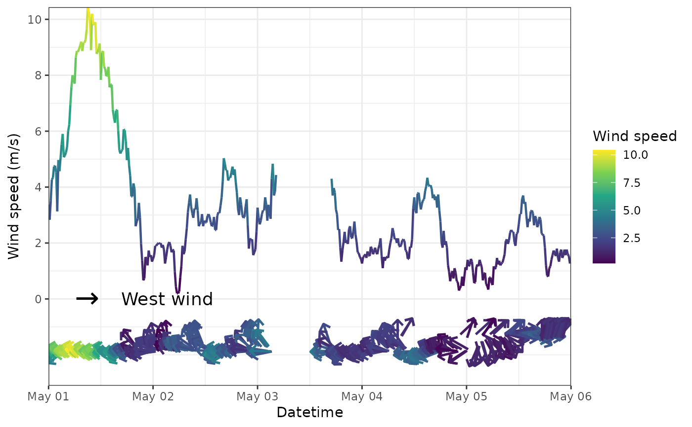

Easy way to plot time series.
Usage
geom_tsw(
df,
coliws = 2,
coliwd = 3,
lsize = 0.8,
psize = NA,
msize = 8,
mlabel = "West wind",
mx = 0.05,
my = -0.1,
mwd = 270
)Arguments
- df
dataframe contains time series.
- coliws
column index of wind speed. The default vaule is 2.
- coliwd
column index of wind direction. The default vaule is 3.
- lsize
size of line (wind speed). The default vaule is 0.8.
- psize
size of point (wind speed). The default vaule is NA.
- msize
size of mark (wind direction). The default vaule is 8.
- mlabel
label of mark (wind direction). The default vaule is "West wind".
- mx
adjust value for the x position of mark (wind direction). The default vaule is 0.05.
- my
adjust value for the y position of mark (wind direction). The default vaule is -0.1.
- mwd
direction of mark (wind direction). The default vaule is 270.
Examples
metds=trs(met, bkip="15 mins")
#> Joining, by = "temp_datetime"
geom_tsw(metds, coliws=4, coliwd=5)
#> Warning: Removed 480 rows containing missing values (geom_point).
